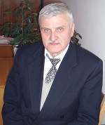

Свої витоки кафедра математики бере з фізико-математичного факультету. Саме на цьому факультеті у Вінницькому державному педагогічному інституті у передвоєнні роки (1933р.) було створено кафедру математики, яку очолив Трахтенберг Рувін Маркович. У той час на кафедрі працював відомий український методист, член УАН Астряб О.М.
Після війни кафедрою керували Трахтенберг Р.М., Ільєвський І.Д., Горошко В.Я.
У 1953 році Вінницький державний педагогічний інститут перейшов у нове приміщення по вул. Червонопрапорній, 32 (будинок колишнього управління Південно-Західної залізниці). Це сприяло розширенню навчально-матеріальної бази фізико-математичного факультету, в тому числі було обладнано нові кабінети кафедри математики.
Починаючи з 1956 року в педагогічних інститутах було збільшено термін навчання до 5-ти років. У ті часи читались такі математичні дисципліни: математичний аналіз, вища алгебра, аналітична, нарисна, проективна і диференціальна геометрії, основи геометрії, елементарна математика, теоретична арифметика і теорія чисел, теорія функцій дійсної та комплексної змінної, методика викладання математики, креслення з методикою викладання, історія математики тощо. Кафедра також забезпечувала керівництво педагогічною практикою студентів.
З 60-х років по 80-і роки ХХ ст. кафедру очолювали Глушков П.М., Карпенко В.Л., Олонічев П.М.
Рувін Маркович Трахтенберг родом з Могилів-Подільського Вінницької області, де народився у 1888 році. Вищу освіту здобув у Льєжскому університеті (Бельгія), завершивши навчання на фізико-математичному факультеті за спеціальністю "Математика" у 1913 році.
З 1923 року працював у Вінницькому державному педагогічному інституті на кафедрі математики викладачем, а в періоди 1933-1941рр. та 1945-1947рр. обіймав посаду завідувача кафедри математики згаданого вище інституту.
Петро Миколайович Глушков народився 27 червня 1920 року в с.Русановка Фатєжського району Курської області в сім’ї селянина.
В 1937 році завершив Фатєжське педагогічне училище, після якого працював вчителем математики 5-7 класів. У 1938 році вступив на фізико-математичний факультет Орловського педінституту, проте завершити інститут завадила війна: спочатку курсант, потім лейтенант, командир, начальник телеграфної станції корпусу.
В 1947 р. закінчив математичне відділення Київського педагогічного інституту, вступив до аспірантури за спеціальністю методика математики.
В 1953 році Перту Миколайовичу було присвоєно науковий ступінь кандидата педагогічних наук та вчене звання доцента по кафедрі "Елементарна математика і методика математики".
З вересня 1965 року працював у Вінницькому державному педагогічному інституті на посаді доцента, 1966-1971рр. – на посаді зав. кафедри математики, 1971-1996 рр. – знову на посаді доцента кафедри математики.
Петро Миколайович мав ряд грамот, подяк та урядових нагород.
Павло Макарович Олонічев народився в травні 1920 року в с. Аксаково Аксаковського району Оренбургської області.
У Саратовському університеті імені М.Г.Чернишевського на механіко-математичному факультеті здобув вищу освіту за спеціальністю "Математика" у 1948 році. Також до 1951 року навчався в аспірантурі за спціальністю геометрія.
1951-1968рр. - старший викладач кафедри математики Вінницького державного педагогічного інституту імені Миколи Островського, потім кандидат фізико-математичних наук, доцент.
У періоди 1976-1981рр. працював на посаді завідувача кафедри математики, а 1981по 1997 рік – доцента кафедри математики.
Павло Макарович мав багато грамот, подяк та урядових нагород: орден «Красная звезда», медалі «За победу над Германией», «За победу над Японией», «25 лет победы в войне 1941-1945», «За доблестный труд», «20 лет победы в Великой Отечественной войне», «30 лет победы в Великой Отечественной войне».
На кафедрі працювали доценти Білий Б.М., Власенко О.І., Олонічев П.М., Куріцин М.О., Портной Х.А., Карелін В.Л., старший викладач Олонічева М.Н.
Для поліпшення управління та методичної роботи на факультеті постало питання про розподіл кафедри, який було зроблено у 1961р. (наказ Міністерства Освіти УРСР № 95 від 3 травня 1961 року: "Організувати у Вінницькому педагогічному інституті замість кафедри математики дві кафедри: кафедру математики та кафедру елементарної математики з методикою викладання математики").
Поділ кафедри на дві структурні одиниці вимагав від керівництва Інституту належної уваги якісному зростанню науково-педагогічних кадрів новостворених кафедр. Найбільш обдаровані випускники фізико-математичного факультету: Мошинський Д.А, Трохименко В.С., Гарвацький В.С., Мельник І.І., Рокіцький І.О., Кулик В.Т, Тимошенко О.З., свого часу були залишені для роботи на кафедрах. Крім того, на кафедру були запрошені перспективні науковці Глушков П.М. та Вінер Й.Я.
|
Андрій Прокопович Войцеховський народився 5 грудня 1924 року в с. Слобода-Шаргородська Вінницької області. Вищу освіту здобув у Львівському педагогічному інституті на фізико-математичному факультеті в 1953 році, де одержав кваліфікацію "Учитель математики і фізики". У 1969 році Андрію Прокоповичу було присвоєно науковий ступінь кандидата педагогічних наук, а у 1971 році вчене звання доцента. 1953-1956рр. – асистент кафедри математики Вінницького державного педагогічного інституту імені Миколи Островського; 1956-1961рр. – старший викладач кафедри математики; 1964-1965рр. – замісник декана фізико-математичного факультету; 1969-1970рр. – декан фізико-математичного факультету; 1970-1974рр. – проректор Вінницького державного педагогічного інституту імені Миколи Островського; 1974-1985рр. – декан фізико-математичного факультету. |
Певний час тут працювали доценти Войцехівський А.П, Білий Б.М., Портной Х.А., Карпенко В.Л., Мошинський Д.А., викладачі Романовський Б.В., Шестакова К.О., Яровий С.С. Доценту Войцеховському А.П. належать адресовані переважно студентам посібники "Математичний аналіз і теорія функцій" (К., 1965), "Вступ до математичного аналізу" (К.,1968),"Математичний аналіз. Диференціальне числення" (К.,1970) та ін.
Низку навчально-методичних посібників створив доцент Білий Б.М. у співавторстві з Бернштейном О.М. Було видано посібники для вчителів "Организация, оборудование и работа математического кабинета в школе" (М., 1960), "Школьное общество любителей математики и его работа" (М., 1962), "Математический кабинет в школе" (М., 1966). Доцент Глушков П.М. у співавторстві з професором Шундою Н.М. опублікував посібник "Диференціальне числення функції однієї змінної" (К., 1991).
Добре зустріла педагогічна громадськість працю "Методика викладання стереометрії" (К., 1992), співавтором якої був доцент Олонічев П.М.
|
Людмила Зосимівна Тарасова народилася 4 грудня 1937 року в м. Могилев (Білорусія). В 1954 році закінчила школу в м. Вінниці. З 1954 по 1959рр. навчалась у Вінницькому педагогічному інституті імені Миколи Островського на фізико-математичному факультеті, пізніше навчалась в аспірантурі при Казахському державному університеті імені С.М. Кірова (м. Алма-Ата). 13 років працювала на посаді старшого викладача кафедри вищої математики філіалу Казахського політехнічного інституту в м. Рудному. З серпня 1978 року працювала на посаді асистента кафедри математики, з 1982 року – на посаді старшого викладача кафедри математики ВДПІ. В 1989р. захистила кандидатську дисертацію з фізико-математичних наук "Стійкість руху гідростата. З 1992 – 2002 рр. працювала на посаді доцента кафедри математики ВДПУ. |
З 1981 року кафедрою завідував професор, кандидат фізико-математичних наук Томусяк А.А.
|  |
Томусяк Андрій Андрійович, кандидат фізико-математичних наук, доцент, професор. У 1957-1962 навчався на фізико-математичному факультеті Кам’янець-Подільського педагогічного інституту, а з 1962-1964 – асистент кафедри математики вище вказаного інституту. У 1964-1967 роках навчався в аспірантурі Київського державного педагогічного інституту ім. М Горького під керівництвом академіка Королюка В.С. І у 1967 році захистив кандидатську дисертацію за спеціальністю «теорія ймовірності» та одержав науковий ступінь кандидата фізико-математичних наук. Томусяк А.А. став першим на той час кандидатом наук на кафедрі математики Кам’янець-Подільського педагогічного інституту і очолив її. У 1969 році йому було присвоєне вчене звання доцента. Пізніше обіймав посаду проректора з науки. У 1981 році Андрій Андрійович почав працювати у Вінницькому державному педагогічному інституті імені М. Островського на посаді завідувача кафедри математики. У 1988-1997 роках обіймав посаду проректора з навчальної роботи. В цей же період, а саме у 1995 році , йому було присвоєне вчене звання професора. 1997-2011 роки – професор кафедри математики. 2011 р.- завідувач кафедри математики. Основні напрямки наукових досліджень: алгебри скінченного рангу, випадкові процеси. Основні публікації: 68 публікацій, серед яких підручники та посібники, методичні розробки для студентів математичних спеціальностей, публікації у фахових виданнях, тези на міжнародних і Всеукраїнських конференціях (Практикум з математичного аналізу. Вступ до аналізу. Диференціальне числення. – К.: Вища школа, 1993; Практикум з математичного аналізу. Інтегральне числення. Ряди. – К.: Вища школа, 1995). Томусяк А.А. має багато подяк, неодноразово нагороджувався грамотами, має урядові нагороди. |
У 1986 році після побудови нового корпусу Вінницького державного педагогічного інституту кафедра математики отримала нові приміщення, було обладнано лабораторії комп’ютерної техніки. На кафедру запрошуються викладачі, які читають інформатику, інформаційні технології (Усач О.Г., Жовтяк І.В., Твердохліб Ю.С., пізніше Вешемірський А.С.)
З 1988 по 1998 рік кафедрою завідував професор інституту Трохименко В.С.
 |
Трохименко Валентин Степанович, кандидат фізико-математичних наук, доцент, професор університету Закінчив СШ №4 м.Вінниці, Вінницький державний педагогічний інститут за спеціальністю «математика і фізика». У 1967-1970 роках навчався в аспірантурі Саратовського університету та одержав науковий ступінь кандидата фізико-математичних наук. З 1973 року почав працювати у Вінницькому державному педагогічному університеті спочатку на посаді старшого викладача, потім доцента (з 1975 року), завідувача кафедри (1988-1998), професора університету (з 1996 року по 2012 рік). Основні напрямки наукових досліджень: теорія півгруп та півгруп перетворень, n-арних алгебраїчних систем, алгебри функцій декількох аргументів. Основні публікації: 150 наукових праць, значна кількість з них опублікована в центральних та міжнародних журналах “Доповіді НАН України”, “Український матем. журнал”, “Кібернетика”, “Известия вузов, матем.”, “Сибирский матем. журнал”, “Algebra Universalis”, “Quasigroups and Related Systems”, “Communications in Algebra”, “Studia Scientiarum Hungarica”, “Czechoslovak Mathematical Journal”, монографії “Алгебры Менгера многоместных функций, - Ch.: S.n., 2006 (Centrul Ed. USM). - 237 p.” та “Algebras of multiplace functions, Berlin/Boston, 2012. – 399 p.” у співавторстві з В.А. Дудеком (Польща). Валентин Степанович підтримує постійні наукові зв’язки з ученими різних країн (США (Шайн Б.М., Панков О.А.), Німеччини, Польщі (Дудек В.), Росії (Саратов) (Салій В.М., Молчанов В.О.), Ульяновськ (доктор тех. наук, проф. Крашенинников В.Р.)). |
На той час в її складі було 16 викладачів, зокрема, доценти Олонічев П.М., Глушков П.М, Томусяк А.А., Абрамчук В.С., Мошинський Д.А., Ковтонюк М.М., Кондратович М.В., Тарасова Л.З., Усач О.Г., ст.викладач Малінковський Б.В., Зузяк Г.В.
|
Олександр Григорович Усач народився в м.Вінниці. Закінчив Вінницьку СШ №4, а згодом і Вінницький політехнічний інститут з відзнакою. Працював в Обчислювальному центрі статуправління Вінницької області інженером-програмістом, потім – старшим інженером програмістом. З лютого 1986 року працював молодшим науковим співробітником на кафедрі математики, згодом – на посаді асистента кафедри математики ВДПІ. В жовтні 1990р. було присвоєно науковий ступінь кандидата технічних наук, з 1991 року працював на посаді старшого викладача кафедри математики, а з червня 1993р. по серпень 1993р. – на посаді доцента кафедри математики. |
У 1991-1995 роках на кафедрі працював доктор фізико-математичних наук (тоді ще кандидат фізико-математичних наук) Боднарчук Юрій Вікторович, який згодом із дружиною, кандидатом фізико-математичних наук Пилявською О.С. переїхали працювати у Києво-Могилянскій академії.
Члени кафедри здійснювали наукові дослідження в галузі алгебри, математичного аналізу, геометрії, обчислювальної математики, теорії ймовірності, методики викладання математики та диференціальних рівнянь. Загалом було опубліковано понад 200 наукових праць.
|
Марина Володимирівна Кондратович народилася в м. Таллінн. Вищу освіту здобула в Ленінградському державному університеті імені А.А.Жданова на механіко-математичному факультеті в 1982 році; потім навчалась в аспірантурі, після завершення якої, рішенням спеціалізованої вченої ради Ленінградського державного університету імені А.А.Жданова було присвоєно науковий ступінь кандидата фізико-математичних наук. У Вінницькому державному педагогічному університеті працювала з 1987 року: 1987-1989рр. – асистент кафедри математики; 1989-1992рр. – старший викладач кафедри математики; пізніше працювала доцентом кафедри математики. На даний час Марина Володимирівна проживає і працює в США. |
Значних успіхів у науково-дослідній та навчально-методичній роботі досягли члени кафедри: доктор фізико-математичних наук, професор Панков О.А., кандидат фізико-математичних наук, професор Трохименко В.С., кандидат фізико-математичних наук, професор Томусяк А.А., доктор технічних наук, професор Стахов О.П.
|
Олександр Андрійович Панков у 1966 році закінчив спецінтернат № 18 фізико-математичного профілю при МГУ (Колмогорівський інтернат). Закінчив Воронезький державний університет. У 1973 році захистив дисертацію на здобуття наукового ступеня кандидата фізико-математичних наук (науковий керівник - проф. С.Г. Крейн). У 1988 році захистив докторську дисертацію на здобуття доктора фізико-математичних наук. У 1990 році одержав вчене звання професора. У 1994 році отримав звання Соросівського професора. Нині Олександр Андрійович обіймає посаду професора в одному з університетів США. Олександром Андрійовичем розроблена теорія G-збіжності та усереднення для нелінійних еліптичних i параболічних рівнянь в частинних похідних, та чисельні методи дослідження нелінійних задач усереднення. Результати знаходять застосування в теорії композитних матеріалів, теорії пористих середовищ, нелінійній оптиці та інших областях. Крім того, розробений варіаційний метод дослідження нелінійних дискретних моделей математичної фізики. Результати знаходять застосування в нелінійній оптиці, теорії хвильових процесів, фізиці конденсованого стану, математичній білогії та ін. Отримані результати про існуванняі локалізованих розв’язків стаціонарного нелінійного рівняння Шредінгера. Результати знаходять застосування в нелінійній оптиці і теорії фотонних кристалів, фізиці конденсованого стану матерії. Проведено дослідження майже періодичних і майже автоморфних розв’язків широких класів нелінійних диференціальних і диференціально-операторних рівнянь. Ранні результати присвячені теорії операторно-значних аналітичних функцій. |
|
Тетяна Євгенівна Панкова закінчила математичний факультет Донецького державного педагогічного університету. У 1989 році захистила кандидатську дисертацію з фізико-математичних наук. В період 1990-1997рр. працювала на посаді старшого викладача кафедри математики ВДПУ. В 1997 році рішенням вченої ради Вінницького державного педагогічного інституту було присвоєно вчене звання доцента кафедри алгебри та методики викладання математики. 1999-2003рр. –доцент кафедри математики ВДПУ. |
З 1998 по 2007 р.р. кафедру очолював професор університету, доцент, кандидат фізико-математичних наук Абрамчук В.С.
|
Абрамчук Василь Степанович, кандидат фізико-математичних наук, доцент, професор університету. Основні публікації: в журналах: “Доповіді НАН України”, “Известия ВУЗов СССР, "Радиоэлектроника”, “Кібернетика”, вісниках Київського та Львівського національних університетів, в матеріалах міжнародних, союзних та Всеукраїнських конференцій; дві монографії; посібник з шкільного курсу математики (рекомендований МОН України, у співавторстві), обчислювальний практикум, методичні розробки дисциплін “Чисельні методи”, “Математичне моделювання”, “Методи математичної фізики”. Основні напрямки наукових досліджень: теорія Чебишевського наближення сукупності дробово-лінійних функцій (багатокритеріальні задачі) та їх застосування в апроксимаційних задачах синтезу динамічних систем; теорія наближення узагальненими інтерполяційними многочленами; теорія розв’язування систем лінійних алгебричних рівнянь з довільними дійсними невиродженими матрицями і довільною структурою ненульових елементів. |
Серед основних напрямів наукових досліджень викладачів кафедри математики були: чисельні методи розв’язування лінійних алгебричних систем великих порядків (Абрамчук В.С., Вешемірський А.С., Твердохліб Ю.С.), алгебри скінченного рангу (Томусяк А.А., Вотякова Л.А., Троян Л.Ф.), алгебри багатомісних функцій (Трохименко В.С.), проблеми використання інформаційно-комунікаційних технологій у навчальному процесі ВНЗ і ПТНЗ (Клочко В.І., Кобися А.П., Абрамчук Н.М.), диференціальні рівняння (Мошинський Д.А., Тимошенко О.З., Ковтонюк М.М., Бак С.М.), теоретико-методичні аспекти загальнопрофесійної підготовки вчителя (Ковтонюк М.М.), використання ділових ігор у навчальному процесі ВНЗ (Захарченко Н.В.), наступність допрофесійної і професійної підготовки майбутніх учителів математики (Тютюн Л.А.).
Кафедра математики сім років поспіль (1995–2002 р.р.) була базовою для проведення другого етапу Всеукраїнської студентської олімпіади з математики. Дев’ять років поспіль (1997–2007 р.р.) наші випускники на другому етапі Всеукраїнської студентської олімпіади з математики виборювали призові місця.
|
Олексій Петрович Стахов навчався у Київському політехнічному інституті на гірничому факультеті та у Харківському авіаційному інституті на радіофакультеті, де в 1961 році одержав спеціальність "Радіоелектронні обладнання систем управління", а також був аспірантом Харківського інституту гірничого машинобудування, автоматики. У 1966 році захистив дисертацію на здобуття наукового ступеня кандидата технічних наук за спеціальністю "Технічна кібернетика"; а у 1973р. захистив дисертацію на здобуття наукового ступеня доктора технічних наук за спеціальністю "Обчислювальна техніка"; 1992р. – академік Академії інженерних наук України. На кафедрі математики ВДПУ працював на посаді професора у 2001-2002 роках. Особливо захопливим для студентів був його спецкурс з теорії золотого перерізу. Нині Олексій Петрович проживає і працює в Канаді, очолює там Інститут Золотого Перерізу. |
З 2007 по 2016 роки кафедру очолювали Ковтонюк М.М., Тютюн Л.А., Тимошенко О.З., Коломієць А.М. У цей період на кафедрі працював чудовий викладач інформатики, кандидат технічних наук, доцент Семенець Д.А. Кафедра протягом всіх цих років була і є базовою для проведення Всеукраїнського конкурсу студентських наукових робіт з математичних наук, а також для Всеукраїнської студентської олімпіади з математики. В аспірантурі ВДПУ імені Михайла Коцюбинського при кафедрі математики під керівництвом викладачів кафедри навчалися аспіранти за спеціальністю 01.01.07 “Обчислювальна математика” (Панасенко О.Б., Дьогтєва І., Бабюк Д.); за спеціальністю 13.00.04 «Теорія і методика професійної освіти» (Туржанська О.С., Антонюк Л.В., Соя О.М., Войтовик В.А., Клімішина А.Я.). Доцент Ковтонюк М.М. у 2010 році вступила в цільову докторантуру і у 2014 році захистила докторську дисертацію зі спеціальності 13.00.04 «Теорія і методика професійної освіти».
Професор Коломієць Алла Миколаївна опублікувала понад 180 наукових і науково-методичних праць, з яких 1 монографія і 2 посібники з грифом МОН України, 8 - у закордонних виданнях. Під її керівництвом захищено 10 кандидатських дисертацій за спеціальністю 13.00.04 – теорія та методика професійної освіти. Була опонентом на захисті понад 10 докторських і кандидатських дисертацій, рецензентом 5 монографій. Є членом наукових редколегій трьох фахових журналів з педагогічних наук: «Інноваційні технології і засоби навчання» (Київ), «Сучасні інформаційні технології та інноваційні методики навчання у підготовці фахівців: методологія, теорія, досвід, проблеми» (Вінниця), «Наукові записки Вінницького державного педагогічного університету» (Вінниця). Має почесне звання відмінника освіти (2004 р.), нагороджена почесним знаком "Ушинський К.Д." (2012 р.) і численними грамотами Міністерства освіти і науки України, Національної академії педагогічних наук, Вінницької обласної державної адміністрації, Вінницького державного педагогічного університету імені Михайла Коцюбинського.
Нині в складі кафедри математики нараховується 11 викладачів, серед них: доктор педагогічних наук, кандидат фізико-математичних наук, професор Ковтонюк М.М.; кандидати фізико-математичних наук, доценти: Абрамчук В.С., Бак С.М., Вотякова Л.А., Жмурко О.І., Тимошенко О.З.; кандидат технічних наук, доцент Яровенко А.Г.; кандидати педагогічних наук, доценти Захарченко Н.В., Тютюн Л.А.; кандидати педагогічних наук, старші викладачі: Ковтонюк Г.М., Туржанська О.С.; кандидат педагогічних наук, асистент Соя О.М., старші лаборанти Поліщук В.О. та Ярош О.І.
За останні 5 років викладачами кафедри було опубліковано кілька монографій, понад 20 посібників та збірників для вищої школи, біля 80 статей у фахових журналах, понад 100 тез доповідей на Міжнародних та Всеукраїнських конференціях. Викладачі кафедри підтримують наукові зв’язки з науковцями США, Німеччини, Польщі, Росії, Білорусі.
XXI століття висуває нові вимоги до освіти, пов’язані з об’єктивними закономірностями розвитку суспільства. Серед найбільш значущих можна виділити такі завдання: зміна змісту навчання; корекція спрямованості навчального процесу; вироблення у студента розуміння необхідності та уміння навчатися упродовж життя, а також засвоєння суми базових (фундаментальних) знань; перехід у навчанні від кваліфікації до компетенції, що дає змогу особистості знаходити оптимальні рішення в будь-яких життєвих ситуаціях; утвердження особистісно орієнтованої педагогічної системи; освіта має набувати інноваційного характеру.
Ці завдання є підґрунтям діяльності кафедри математики та інформатики, яка нині працює над підвищенням якісної підготовки студентів; над реалізацією кредитно-трансферної системи навчання студентів; над створенням навчально-методичних комплексів з усіх дисциплін, які забезпечує кафедра; над змістовим наповненням сайту кафедри; над підвищенням кадрового забезпечення кафедри; над впровадженням результатів науково-дослідної роботи та нових технологій у навчальний процес, над теоретичним обгрунтуванням фундаментальних досліджень.
 Кафедра математики та інформатики
Кафедра математики та інформатики